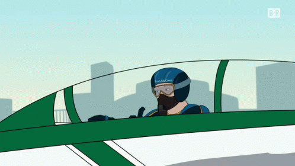

Click this button to toggle dark mode!
About Me
Welcome to my index page! I have added some things about me.
My Hobbies
As a very concise about me I have included some of my favorite things to do.
- Cooking and eating new foods
- Gaming
- Creating and Editing Youtube videos
My Culinary Spiel
I personally think that eating new foods is one of the greatest ways to experience culture and to expand your limit of what you want to try. As a personal task, I try to eat at two new restaurants every month to see if my tastes in food have changed. Expanding upon that I also think that cooking is a great way to give yourself a morale boost when living alone like myself. Sometimes, it doesn't even have to the best and fanciest home cooked foods, a nice grilled cheese can be the best way to make up a long day of studying.
A top 3 list of my favorite cuisines to eat and cook
- Filipino (Being born as Filipino, I kind of have to rep my own food, but it never fails to be a savory meal I can easily make to remind me of home.)
- Malaysian (A recipe like Nasi Goreng is a really good alternative to fried rice and a good change of spices from other common asian cuisines.)
- Italian (Italian food has so many ways to prepare and make pasta to your personal tastes. Want a rich and creamy pasta? Go Alfredo. Want something quick and light with some powerful garlic taste? Go Spaghetti Aglio e Olio.)
Gaming Logs
Video Games are one of those pastimes that are becoming so common and it's hard to find someone who doesn't have a favorite game they had played before. Here's some of the current games I play right now:
- Bioshock- A classic shooter/action-adventure series, I really dig the setting of fighting enemies in a collapsing underwater city and exploring the depths
- Valorant- For when you want a great twitch shooter experience to play with some buddies. The appeal of Valorant is that you really can't put it down, and winning round after round because of you and your team's raw skill gives you a real ego boost
- Escape From Tarkov- Compared to the two shooter games above, Tarkov is a game that punishes you for every wrong move. If you get eliminated, you lose all of your hard earned gear and every encounter with enemy players is a anxiety inducing and surprisingly fun experience
- Bloons Tower Defense 6- My go-to relaxing game, a simple tower defense game where funny cartoon monkeys shoot darts at balloons
Thank you for reading a little bit about me. I have also included my resume and a funny little page on internet culture and its humor!